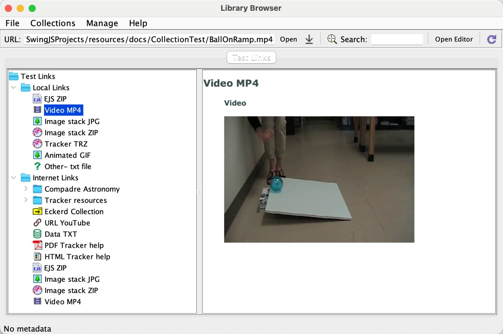

Open Source Physics (OSP) Resources

Collections
Open Source Physics Digital Library Browser
The OSP Digital Library Browser enables you to browse, organize and access collections of digital library resources,
such as EJS models and Tracker experiments. Collections and resources may be on a local drive or remote server.
- Open a collection by choosing from the Collections menu or entering a URL directly in the toolbar as with a web browser.
- Collections are organized and displayed in a tree. Each tree node is a resource or sub-collection. Click a node to learn about the resource or double-click to download and/or open it in EJS or Tracker.
- Build and organize your own local collection by clicking the Open Editor button. Collections are stored as xml documents that contain references to the actual resource files. For more information, see the Help menu.
- Users can share OSP collections by uploading all files to the web or a local network.